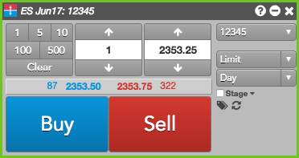
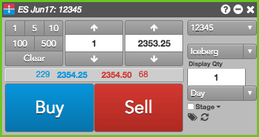
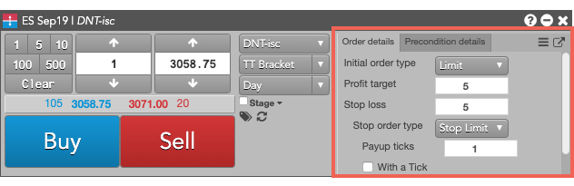
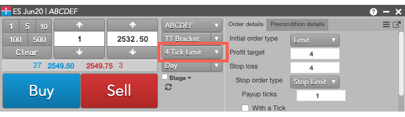
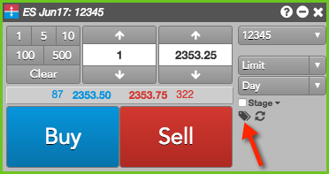
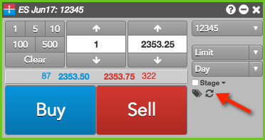

To submit an order from Order Ticket:
-
Open an Order Ticket.

- Enter the order quantity and price.
- Select the account, an order type, and TIF settings. Note that the list of order types can vary based on the exchange.
-
If the selected order type requires additional information (e.g., Iceberg), provide the value.

Note: If you select a TT Order type or custom algo order type, enter the additional information in the embedded panel. Based on the TT Order type, the panel might include tabs for additional parameters. For example, the following shows a fly-out dialog for a TT Bracket order type.
Note: You can click
 to display the available templates and
to display the available templates and  to display all of the parameters in a flyout.
to display all of the parameters in a flyout.For quicker access to order templates, you can display the template selector by enabling Algo templates from the Show/Hide context menu.

-
Optionally, click the tag icon to show and enter data in the free-form text fields.

These fields may be populated by default with user order-routing exchange properties from the Setup application. The usage of these free-form text fields varies by exchange. Tip: As needed, you can click the reset icon to reset the order ticket to its default settings.
- Click Buy or Sell to submit the order.